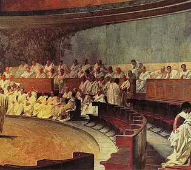

Helenismo
Escuelas
El periodo helenístico comprende convencionalmente desde la muerte de Alejandro Magno en el año -323 hasta la conquista de Egipto por el Imperio Romano, en el año -30. Este periodo se caracteriza por la extensión del mundo y la cultura griegas debido a las conquistas de Alejandro Magno.
Este importante cambio influyó decisivamente en la forma de pensar y de afrontar las cosas de los griegos. Lo que antes estaba centrado en la polis y sobre todo en Atenas, ahora se repartía por extensos lugares, y los ciudadanos empezaban a considerarse cosmopolitas y no solo politas. Los centros de influencia seguían siendo las ciudades, pero Atenas tenía que compartir su importancia con Alejandría, Antioquia, Pérgamo o Esmirna, ciudades que se esforzaban en atraer a todo el mundo cultural.
Los filósofos de esta época de desentienden de la política y de sus deberes ciudadanos que ya no entienden ni comparten y se esfuerzan en buscar soluciones individuales para conseguir la felicidad al margen de la colectividad. Por esto, a las escuelas que surgen en este periodo se las ha llamado, a veces, escuelas de felicidad, porque lo que buscan es precisamente conseguir la felicidad y compartirla con todos aquellos que se acerquen por sus escuelas.

Socráticos menores
Las primeras, cronológicamente hablando, son las que se han denominado injustamente socráticos menores, porque sus fundadores fueron discípulos de Sócrates, y porque de la diferente interpretación de sus palabras surgen las diferentes escuelas o movimientos de este período. Sin embargo se sabe poco de ellas, ya que se apartan del lado oficial establecido, y eran consideradas y aún hoy lo siguen siendo, como transgresoras.
La escuela cínica fundada por Antístenes y Diógenes, quien toma la provocación y el atrevimiento por algo habitual, para conseguir la ataraxía mediante el ejercicio y la ascesis.
La escuela cirenaica, de Arístipo de Cirene, basada en las sensaciones, sobre todo en el placer, por lo que reciben también el nombre de hedonistas.
La escuela de Megara, fundada por Euclides de Megara, la escuela de Elis fundada por Fedón de Elis (a quién Platón dedica uno de sus diálogos) y la escuela de Eretria fundada por Menedemo de Eretria, son una muestra de la vitalidad del pensamiento de Sócrates, transmitido e interpretado por una serie de gentes inquietas.
A pesar de lo poco que se sabe de estas escuelas, su importancia en aquella época fue notable, y además parte de su filosofía y de sus actitudes pasaron a las escuelas posteriores, más evolucionadas como fueron escépticos, estoicos y epicúreos.
Escuelas helenísticas.
Las principales escuelas helenísticas fueron: Epicúreos, estoicos y escépticos. Además en esta época seguían funcionando la academia de Platón y el liceo de Aristóteles, y con el paso del tiempo surgió la escuela o movimiento neoplatónico de Plotino, que también se considera helenístico y quedaban además un nutrido grupo de sofistas.
Como se ve, tanto por la cantidad como la diversidad, las escuelas en esta época tuvieron una importancia fundamental y algunas sobrevivieron varios siglos ya en el mundo romano.
Dentro de la diversidad, varias escuelas fueron consideradas ya en su tiempo transgresoras tanto en su vertiente social como en la filosófica, es decir, tanto por su actitud personal como por su pensamiento y sus ideas y esas son las que nos interesan aquí, nos referimos a cínicos, escépticos, cirenaicos y epicúreos principalmente.
Hay que tener en cuenta el peso negativo que estos conceptos vienen arrastrando casi desde su origen y que no han perdido aún en nuestros días. Los pensadores de estas escuelas sospechaban que en los discursos oficiales, o en los ofrecimientos de los poderosos, no se encontraba nada de valor para el ser humano, sospechaban que la felicidad había que buscarla en otra parte y que no iba a ser nada fácil. Lo primero que hacían estos filósofos era ponerse en contra y liberar a los seres humanos del miedo y de la ignorancia.
Además de estas escuelas y tendencias, en el siglo IV, existían también otras, como la Academia de Platón, el Liceo de Aristóteles, La Stoa de Zenón y por lo que a nosotros respecta las más importantes: el Jardín de Epicuro y los escépticos.
<- Atrás